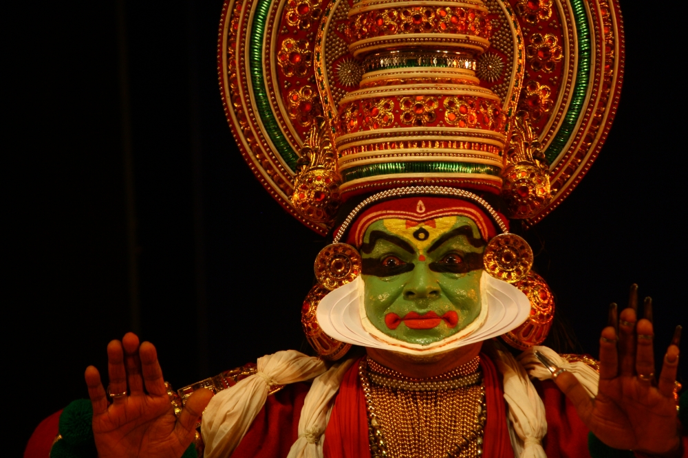

Kerala has a rich tradition of various art forms, including Kathakali, Mohiniyattam, Theyyam, and Koodiyattam.

EXPLORE THE BEAUTY OF ART
Kathakali is a form of classical dance-drama that tells stories through facial expressions, hand gestures, and body movements, often accompanied by music and percussion.
NATURAL BEAUTY OF KERALA
Theyyam and Koodiyattam are ritualistic and ancient forms of theater that are typically performed in temples and involve elaborate costumes and makeup.